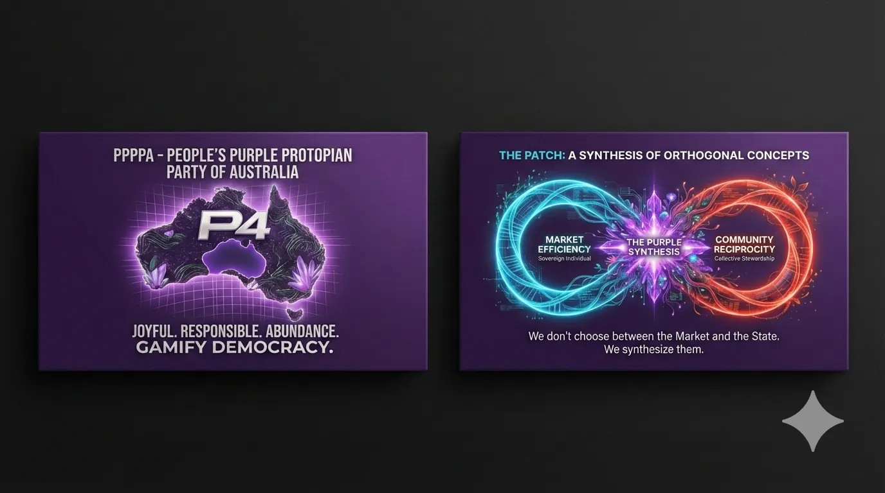

Twinkle 03 follow-through
Risk and Mutual Care
The insurance gripe opens into a bigger civic room: prevention, mutual care, lawful risk pools, reinsurance and community wealth funds.
Plain hook
Risk should not become rent.
P4A can explore community risk and mutual-care models where lawful: discretionary mutual funds, co-operative reserves, transparent risk pools, prevention grants and reinsurance for the risks too large for any local group to carry alone.
Mutual care modules
L2 wealth funds
The L2 layer is where regional wealth can become resilience capital. Community sovereign wealth funds could hold returns from public power generation, infrastructure, local enterprise and natural-resource value, then support risk reduction, community loans, food resilience and mutual insurance reserves.
External example
Moreton Bay Community Wealth and Mutual Care.
The linked Aura of Intelligence repo explores the same practical lane in a local archipelago frame: community wealth funds, mutual protection, personal and Indigenous data sovereignty, Native Title and Country-led deal pathways, and everyday choices for groups that need simple language before technical detail.
This link leaves P4A. Treat it as a research doorway and example pattern, not legal, financial, cultural, insurance, tax or investment advice.
Open the public page for shared wealth, local care, mutual risk thinking and data sovereignty.
Leaves P4AGitHub repoOpen the source repo for the Moreton Bay wealth and mutuals site.
P4ABraided EconomyConnect mutual protection back to money, care, contribution and transparent local support.
P4ACivic LedgerTrack promises, reserves, prevention work, corrections and public-benefit records.
National/Oceania frame
Australia and Oceania need insurance models that reward prevention and local capacity. Where for-profit cover is essential, keep it. Where communities can lawfully pool risk and fund prevention, give them clean governance, plain-language rules and serious audit trails.